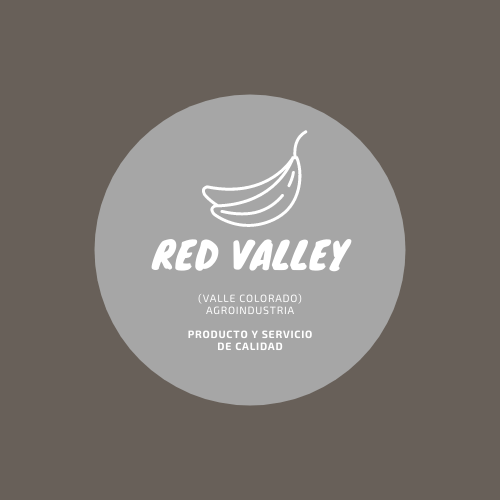
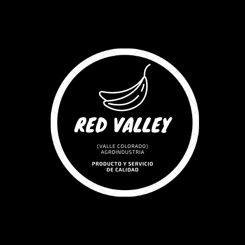

|  | Red valley |
|
Empresa Agropecuaria Y De Bienes Raices |
||
Esta todo a tu alcanace... |
||
|
||||||||||
| Menu -> | Inicio | / | Medio Ambiente | / | Bienes Raices | / | Comercializadora | / | Contactanos | |
RedValley//Servicios Que propocionamos a nuestros clientes | |
Bienes Raices// Red Valley |
| Definicion de Bienes Raices| Tipos de raices, etc...| |
|
Los bienes raíces son aquello que por su naturaleza no se pueden mover, denominados inmuebles. Un bien raíz coincide con los bienes inmuebles como edificios, terrenos y cualquier derivado de éstos que están fijados a la tierra. Son denominados así debido a que no se pueden trasladar. Este tipo de activos se denominan así porque están íntimamente unidos al suelo, ya sea de forma física o jurídica (son inseparables legalmente). También, a los mismos efectos, los buques y aeronaves acuáticas son considerados bienes raíces, ya que su funcionalidad está en la superficie marítima, siendo inútiles si se desligan de este En general, este tipo de bienes son considerados como activos fijos en la contabilidad y finanzas de las empresas, contando como mejoras o incrementos de valor aquellas reformas y añadidos que puedan aumentar su valor. Mención especial son las minas o vías de tren, que son también construcciones y cuyo activo principal es la propia construcción, ya sea por ser el origen de las extracciones o por ser el conducto preferente para la actividad económica. Tipos de raicesSuelen representarse diversos tipos de bienes raíces según su tipología:
Los activos inmobiliarios pueden tener hipoteca, mientras que los muebles no, y además se pueden inscribir en registros públicos de la propiedad para un mayor control jurídico. Ver mas. |
||
 | ||
Agricultura// Red Valley |
| Definicion de Agricultura Organica| Tipos de Agriculuta, etc...| |
|
La agricultura orgánica es un sistema de producción que trata de utilizar al máximo los recursos de la finca, dándole énfasis a la fertilidad del suelo y la actividad biológica y al mismo tiempo, a minimizar el uso de los recursos no renovables y no utilizar fertilizantes y plaguicidas sintéticos para proteger el medio ambiente y la salud humana. La agricultura orgánica involucra mucho más que no usar agroquímicos. En Centroamérica se está produciendo una gran variedad de productos agrícolas orgánicos para exportación. Cuales son Los requisitosExisten requisitos específicos para certificar la producción orgánica de la mayoría de los cultivos, animales, cría de peces, cría de abejas, actividades forestales y cosecha de productos silvestres. Las reglas para la producción orgánica contienen requisitos relacionados con el período de transición de la finca (tiempo que la finca debe utilizar métodos de producción orgánicos antes de que pueda certificarse; que es generalmente de 2 a 3 años). Entre los requisitos están la selección de semillas y materiales vegetales; el método de mejoramiento de las plantas; el mantenimiento de la fertilidad del suelo empleado y el reciclaje de materias orgánicas; el método de labranza; la conservación del agua; y el control de plagas, enfermedades y malezas. Además, se han establecido criterios sobre el uso de fertilizantes orgánicos e insumos para el control de plagas y enfermedades. Con respecto a la producción de animales, normalmente hay requisitos sobre la sanidad de los animales, su alimentación, reproducción, condiciones de vida, transporte y procedimientos para sacrificarlos. Como obtener la certificacion?Las normas para la agricultura orgánica son creadas principalmente por agencias certificadoras privadas, pero también muchos países han creado normas nacionales. En Centroamérica, el gobierno de Costa Rica ha establecido sus propias reglas y los otros países están en el proceso de crear y poner en práctica las suyas, con el fin de apoyar al sector de la agricultura orgánica. Europa, Estados Unidos y Japón tienen normas nacionales y si los productores desean exportar sus productos a estos mercados deben cumplir los requisitos de etiquetado orgánico de los países importadores. La selección de la agencia certificadora es muy importante. La agencia que escoja el productor debe estar reconocida oficialmente y ser de confianza para el comprador en el país importador. Las agencias certificadoras nacionales a menudo son menos costosas que las agencias internacionales, pero podrían no ser tan conocidas en algunos mercados extranjeros. El período de transición de la finca para obtener la certificación orgánica a veces resulta costoso para el productor, ya que mientras pasan los 2-3 años el producto se vende a su precio convencional, pero el productor tiene que cumplir con los principios de la producción orgánica, lo cual puede aumentar sus costos de producción y disminuir su productividad, al menos al principio. Para bajar el costo de la certificación, los productores pueden agruparse y crear un sistema de control interno, siempre y cuando cumplan con ciertos requisitos. Al hacer esto, es importante que los productores tengan en cuenta que deben confiar y trabajar juntos, ya que dependerán mucho unos de otros. ¿Cuáles son las principales ventajas y limitaciones?Los productores se cambian a la agricultura orgánica por varios motivos. Algunos consideran que el uso de agroquímicos sintéticos es malo para su salud y para el medio ambiente, otros se sienten atraídos por los precios más altos y el rápido crecimiento del mercado, para muchos productos orgánicos, en los últimos años. La agricultura orgánica puede representar una oportunidad interesante para muchos productores centroamericanos y puede convertirse en una herramienta importante para mejorar su calidad de vida y sus ingresos. El cambio a la agricultura orgánica puede ser más fácil y más rentable para algunos productores, dependiendo de algunos factores tales como, por ejemplo, si el agricultor utiliza agroquímicos sintéticos de forma intensiva o no, si tiene acceso a mano de obra (la producción orgánica suele requerir más mano de obra), si tiene acceso a fertilizantes orgánicos y a otros insumos permitidos, y si es propietario de su tierra, etc. Por lo general, en Centroamérica los productos orgánicos se venden en las ferias del agricultor y, más recientemente, en supermercados. A pesar de la creciente demanda nacional, los principales mercados para los productos orgánicos centroamericanos son Norteamérica, Europa y Japón. En un principio, la agricultura orgánica le interesaba sobre todo a los pequeños productores, hombres y mujeres, pero con el crecimiento del mercado, algunos grandes productores han empezado a producir de manera orgánica. Esto ha creado una mayor presión competitiva sobre los precios y la calidad de los productos. Existen limitaciones técnicas con algunos productos orgánicos en algunas situaciones donde todavía no hay buenas alternativas por el uso de agroquímicos. La mayoría de los productos orgánicos reciben un precio más alto en comparación con los productos convencionales. Sin embargo, aunque es difícil generalizar, se espera que en un futuro esta diferencia de precio se reduzca debido a un aumento en la producción orgánica de algunos productos, con lo que se podrá satisfacer la demanda del mercado. Por otro lado, si bien existe el riesgo de que disminuya el sobreprecio que reciben los productos orgánicos y que, en algunos casos, incluso desaparezca, los productos orgánicos certificados son bien reconocidos en la mayoría de los mercados y, como tales, pueden ser preferidos sobre los productos convencionales. Ver mas. |
||
| ||
Comercializadora// Red Valley |
| Definicion de Comercializadora| Tipos de comercios, etc...| |
¿Qué es una Comercializadora?Te has preguntado ¿Qué es una comercializadora? Una comercializadora es una gran organización empresarial especializada en una determinada gama de productos cuyo propósito es comprar productos a proveedores/fabricantes en grandes volúmenes, ya sea para venderlos en sus países o en cualquier otro mercado emergente a través de canales de distribución establecidos. Las comercializadoras trabajan a través del Contrato de Agencia Comercial Internacional. Mediante este tipo de contrato, estas empresas establecen la presencia comercial en países extranjeros mediante la solicitud de pedidos y la facturación a nombre del fabricante. Las empresas comerciales prosperan como nunca antes en todo el mundo y forman una parte importante de la cadena de suministro. Al ser el puente entre los fabricantes o los productores y los grandes minoristas, obtienen enormes beneficios y también ayudan a otras empresas a aumentar sus ventas. Ventajas y desventajas de las comercializadorasCada tipo de negocio tiene sus propios altibajos. Las empresas comerciales no son la excepción. Ventajas de las empresas comerciales:Muchas oportunidadesA pesar de que se trata de productos particulares, cualquier otra oportunidad que pueda generar algún ingreso que valga la pena emprender siempre que estén en conformidad con los procedimientos establecidos. Ya sea que seas un inversionista a gran escala o dueño de una pequeña empresa, las comercializadoras serán tus preferidas. No requiere stock operativoUna vez que han establecido los mercados, importan los productos en nombre del fabricante o proveedor al cliente objetivo. Luego reciben comisiones o descuentos según lo acordado. Menos costos de almacenamientoAlgunas empresas comerciales negocian los precios en nombre del fabricante e importan los productos en su nombre directamente al cliente. Esto ayuda a reducir los costos de almacenamiento, los daños resultantes del almacenamiento y también las pérdidas. Interacción directa con los consumidoresPara establecer los mercados, las empresas comerciales tienen que hacer visitas a los compradores o usuarios finales para saber qué es lo que mejor se vende. Facil de operearSimplemente por obtener productos del fabricante y entregarlos al usuario final tendrá una gran comisión. No todas las transacciones implican procedimientos largos. Algunas tardarán menos de un día y el trato está cerrado. Ver mas. |
|
|
|  | Red ValleySerivicos y productos de calidad+504 3155-0459 |
Siguenos En Nuestras Redes Sociales |  |
 |
 |